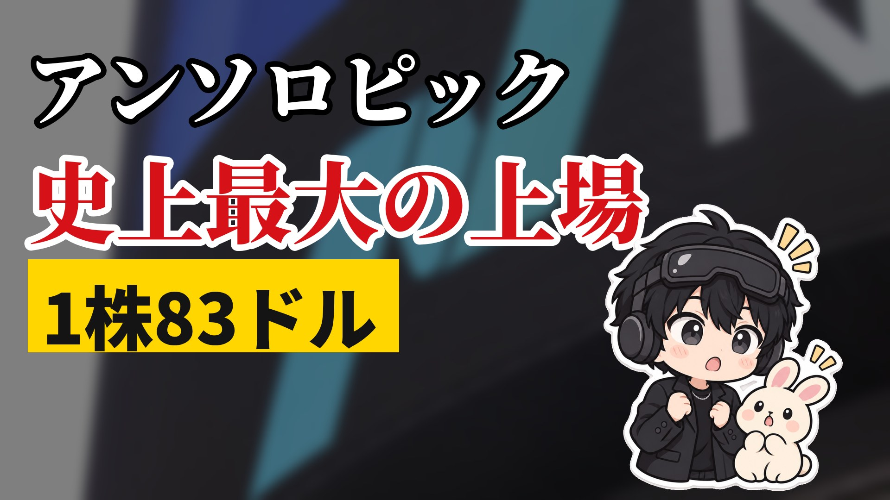

題材：アンソロピックの上場（公開価格の決定）と、Colneさんの note「【特集】アンソロピックIPO、初日に誰が売れるのか」。報道映像・海外の記事・会社の公式X投稿を、出典を表示して引用しています。声は学習したColneの声です。
報道映像を全面に出す①の見た目で、②の「史上最大の上場、アンソロピック」から入る台本にしました。日付の場面と数字の場面も、実写の上に出しています。

実写（報道映像）や記事の画面を全面に出し、赤い大きなテロップで見せる場面と、キャラだけを映す場面を切り替えます。
「10月26日」「11月10日」「19日の朝」と日付の札でたどり、最後に記事の数字へつなぎます。
キャラだけを大きく映す場面（ニュースのデスク）と、クリーム色のスライドを全面に出す場面を切り替えます。記事・投稿はスライドの中で引用します。
「誰が売るの？」→「結論」→「理由①②」の順。報道映像はスライドの中に小さく引用します。
引用元：テレ東BIZ（YouTube）「アンソロピック史上最大級のIPOへ」2026年11月18日／CNBC（2026年11月18日・米国時間）／Anthropic 公式X（2026年11月18日・米国時間）。各場面に出典を表示しています。報道映像は人が映らない場面だけを使っています。両チャンネルのキャラクターやロゴは使っていません（見せ方の参考のみ）。